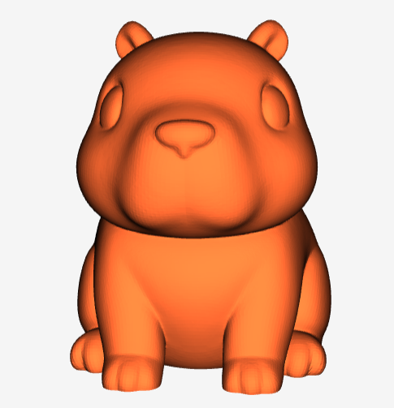

Опис проекту
Знайомтеся з капібарою: спокійною, милою та готовою створювати приємний настрій на вашій полиці чи рюкзаку! Завдяки розслабленій позі та дружньому виразу мордочки цей маленький приятель стане ідеальною моделлю для швидкого друку. Чудовий компаньйон для робочого столу, колекції або для перетворення на брелок.
3D проєкт
3D-модель капібари
Мій проєкт — це 3D-модель капібари “Capybara 27 min — The Master of Chill”. о. Таку модель можна використовувати для 3D-друку, переглядати її з різних боків і краще розуміти, як працюють сучасні 3D-технології.
Посилання на 3D-модель: Переглянути 3D-модель капібари
